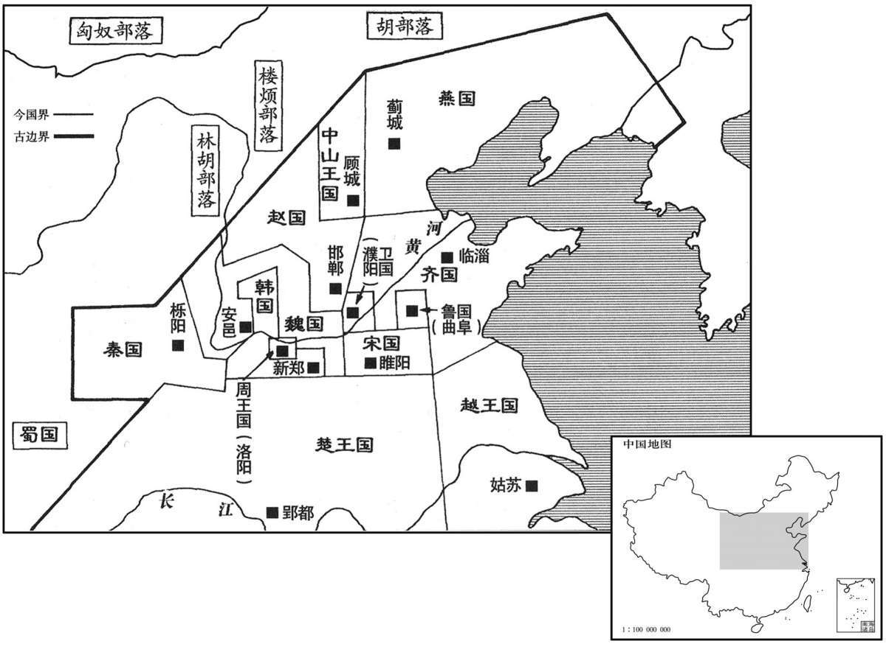

公元前375年资治通鉴：本年记事、原文与白话对照
按原书编年位置阅读；追叙和史论不等于本年发生的事件。白话采用所据译本，缺译不以生成译文补齐。
卷1 · 本年记事
公元前375年 · 烈王在位第1年
元年〔（丙午、前三七五）〕

本年形势与背景参考图
原文 · 胡三省注本
日有食之。
白话 · 所据译本
出现日食。
原文 · 胡三省注本
韩灭郑，因徙都之。〔韩本都平阳，其地属汉之河东郡；中间徙都阳翟。郑都新郑，其地属汉之河南郡。郑桓公始封于郑，其地属汉之京兆；后灭虢、郐而国于溱，洧之间，故曰新郑，左传郑庄公所谓“吾先君新邑于此”是也。今韩既灭郑，自阳翟徙都之。韩既都郑，故时人亦谓韩王为郑王，考之战国策、韩非子可见。〕
白话 · 所据译本
韩国灭掉郑国，于是把国都迁到新郑。
原文 · 胡三省注本
赵敬侯薨，子成侯种立。〔种，章勇翻。〕
白话 · 所据译本
赵国赵敬侯去世，其子赵种即位，是为赵成侯。